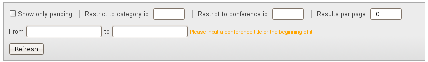
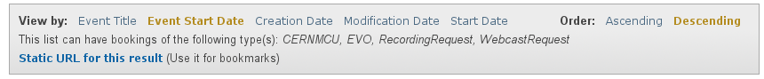
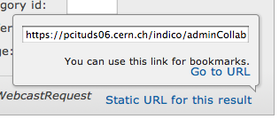

1. Introduction¶
Welcome to the Video Services User Guide for the Video Services Administrator.
You have been appointed as a Video Services Administrator in order to overview one or all of the Video Services Systems in all of Indico. Or, you are an Indico Server Administrator that wants to overview the Video Services Systems.
In Indico’s Menu Bar, you should see a Video Services Overview button:

Figure 1. Video Services Overview button
Or, a Video Services Overview menu entry in your Administration menu (if you are also an Indico administrator):

Figure 2. Administration menu
Click on it to access the Video Services Overview page.
2. The Video Services Overview page¶
The Video Services Overview page lets you query the index of all bookings / requests that have been performed on any of the Video Services Systems.
This page is divided into two main parts: the top part that you can interact with to get query results, and a bottom part where you get the results.
The top part is in turn divided into three sections: a list of indexes, a filtering section, and a View By section.

Figure 3. Video Services Overview page.
2.1. The different indexes¶
At the top, you can select one of the indexes (zone 1 in figure 3). There are three types of index:
- “All” index: here you find all the bookings or requests of the Indico system, regardless of what system / plug-in is being used.
- Individual plug-in indexes: one for each plug-in. In the screenshot above, these are the CERNMCU, EVO, RecordingRequest, Vidyo and WebcastRequest indexes.
- “Combined” indexes: some plug-ins may want to appear into an additional index, with other plug-ins. In the screenshot above, you will see the “All Videoconference” index, which groups CERNMCU bookings, EVO bookings and Vidyo bookings.
If you hover the mouse over the name of an index, it will show what kind of bookings are included in it.
Click on one of the index names to get results from that index.
2.2. The filtering section¶
Under the index names, there is a section used to filter the results (zone 2 in figure 3).
2.2.1. Restrict to pending requests only¶
Some plug-ins can have a “pending” state. In particular, Recording Request and Webcast Request have the concept of “pending” requests, which means requests that have been submitted to our responsibles, but have not yet been accepted or rejected.
Checking the Show only pending option will filter the results so that only pending requests are shown.
2.2.2. Restrict by category id¶
Enter a category ID here to restrict the view to only bookings and requests associated with the category’s events.
2.2.3. Restrict by conference id¶
Enter an event (meeting / lecture / conference) ID here to restrict the view to only bookings and requests associated this event.
2.2.4. Results per page¶
If there are many results, they will be paginated, as shown in the screenshot. You can change the amount of results per page. Bookings are usually grouped (per date or per event, depending on the type of view). This number will change the number of groups that appear in each page.
2.2.5. Restrict results to an interval¶
2.2.5.1. Filtering by event title¶
If you have selected View By: Event title in the View By section, then you can filter by event title. The filtering section looks like this:

Figure 4. Filtering section, when View By: Event Title is selected
You can write text in the from and to boxes to bind results based on the event title. For example, if you enter “ATLAS” in the from box, and “CHEP” in the to box, you will get all the bookings and requests which are in events whose title is between “ATLAS” and “CHEP” in alphabetical order. For example, you would get bookings from an event called “Bosons are Wonderful”, but not those belonging to an event called “Delta Gamma Phi”.
If you leave the from box empty, there will be no boundary for the results on the “initial” side; if you leave the to box empty, there will be no boundary for the results on the “ending” side. So, for example, writing “ATLAS” in the from box and nothing in the to box will return all the bookings and requests for events whose title lies alphabetically after “ATLAS”.
2.2.5.2. Filtering by dates¶
If you have selected View By: Event Start Date, or View By: Creation Date,*or*View By: Modification Date,*or*View By: Start Date in the View By section, you can filter by date. The filtering section looks like this:

Figure 5. Filtering section, when View By: Event Start Date, Creation Date, Modification Date, or Start Date are selected
There are two choices for filtering by date:
Filter between two dates. Enter the dates in the Since and to boxes. When you click on the boxes, a calendar should appear to help you input the date.
If you do not enter anything in one box, you will not restrict the bookings in that direction. For example, if you only put 01/08/2009 in the Since box, you will get all the bookings after the 01/08/2009.
Filter between two dates relative to the present. Enter an amount of days in the from *** days ago and to *** days in the future boxes.
For example, to see all the bookings and requests of the next two weeks, I would enter 0 in the From *** days ago box, and 14 in the to *** days in the future box.
In both cases, if what you enter is not in the correct format (dates in the first case, integers in the second case) the related fields will be highlighted in red.
2.2.6. Refresh / Apply Filter button¶
Every time that a value of one of the filtering fields is changed, the results do not update automatically. You need to press the Apply Filter button for the changes to take place.
If you want to update the results without changing the filtering criteria, press the same button (its text should read Refresh).
2.3. The View By section¶
Under the filtering section appears the View By section (zone 3 in figure 3).

Figure 6. The View By section
2.3.1. Choose how to view the results¶
Here you can choose if you want to view your results ordered by:
- Event title: the results will be grouped by the event they belong to, and will be ordered by the name of that event, alphabetically.
- Event start date: the results will be grouped by the event they belong to, and will be ordered by the start date of that event.
- Creation date: the results will be ordered by the date they were created. They will also be grouped by day (taking into account your personal timezone). For bookings, this means the moment that they were created with the “Create” button. For requests, this means the moment the request was initially sent.
- Modification date: the results will be ordered by the last time they were modified. They will also be grouped by day (taking into account your personal timezone). For bookings, this is the last time a booking was edited. For requests, this is the last time the request was modified.
- Start date: the results will be order by their start time. They will also be grouped by day (taking into account your personal timezone). Some bookings or requests may not have a “start date”. For now, only EVO and CERNMCU bookings have a start date; Recording Request and Webcast Request do not.
2.3.2. Choose how to order the results¶
On the right, you can choose the order of the results:
- Descending
- For the view by event title option, the results will be shown in alphabetical order.
- For the other date-related view by options, they will be shown in chronological order, the most recent dates first and the oldest dates later.
- Ascending
- For the view by event title option, the results will be shown in reverse alphabetical order.
- For the other date-related view by options, they will be shown in reverse chronological order, the oldest dates first and the most recent dates later.
2.3.3. Kinds of bookings / requests shown¶
The second line of this section informs you which kind of bookings are displayed depending on your View By option. This is relevant, in the case of View By Start Date, because requests (RecordingRequest, WebcastRequest) do not have a start date.
2.3.4. Static URL for the result¶
This option will prove very useful if you often perform similar queries.
Click on Static URL for this result and a new line will appear:

Figure 7. Static URL for a result and Go to URL link.
You can copy the URL in the text box or bookmark it. The parameters of your query, such as which index is being queried, are encoded in the URL and so you will not need to enter them again.
You can also click on Go to URL to test the URL directly.
2.4. The results section¶
In the bottom half of the page, you will be able to see the results of your query (zone 4 in figure 3).
In case there are no results, No results found will appear.
If there are results, from top to bottom you will see the following results:
Number of bookings or requests returned. e.g. Query returned 867 results.
Number of bookings or requests in the index. e.g. 1546 bookings in this index.
The results themselves. As mentioned previously, they will be grouped either by event, or by day, depending on what you chose in the View By section.
Depending on the Results per page parameter, your results may be paginated. Results with lots of bookings will probably be paginated. Click a page number to change the page.
Each of the results is a row with several columns.
If the results are grouped by event (View by Event Title and View by Event Start Date), the columns will be, from left to right:
Type of booking or request (EVO, RecordingRequest, etc.)
Status message (Ready to start, Accepted, etc.)
Last modification date.
A short info text written by each plug-in (e.g., the title of the booking).
A Change link that takes you to the Video Services section of the associated event, in order to change the booking or request, or see more of its data.
As a Video Services Administrator, you have the right to perform any operation in the Video Services Section.
This link is especially useful for Video Service Administrators of Recording Request and Webcast Request. They can click on it in order to go to a request page and Accept*or *Reject it. The Accept and Reject buttons will appear at the top of the request page.
An Event Display link that shows the event display page of the event with which the booking is associated. For meetings and lectures, this will be the display page of the event. For conferences, it will be the Video Services display page of the conference.
If the results are grouped by date (View by Creation Date, View by Modification Date*and *View by Start Date), the columns will be, from left to right:
Start time, in your own display timezone. e.g. 16:05.
Type of booking or request (EVO, RecordingRequest, etc.)
Status message (Ready to start, Accepted, etc.)
Title of the event the booking or request belongs to.
A short info text written by each plug-in (e.g., the title of the booking).
A Change link that lets you go to the Video Services Section of the associated event, in order to change the booking or request, or see more of its data.
As a Video Services Administrator, you have the right to perform any operation in the Video Services Section.
An Event Display link that shows the event display page of the event with which the booking is associated. For meetings and lectures, this will be the display page of the event. For conferences, it will be the Video Services display page of the conference.